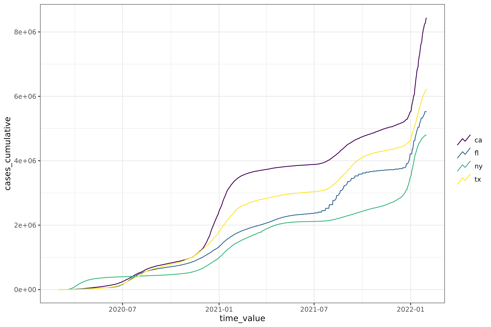

Overview
This vignette provides a brief introduction to the epiprocess package. We will do the following:
- Get data into
epi_df()format and plot the data - Perform basic signal processing tasks (lagged differences, rolling average, cumulative sum, etc.)
- Detect outliers in the data and apply corrections
- Calculate the growth rate of the data
- Get data into
epi_archive()format and perform similar signal processing tasks
Getting data into epi_df format
We’ll start by getting data into epi_df() format, which
is just a tibble with a bit of special structure. As an example, we will
get COVID-19 confirmed cumulative case data from JHU CSSE for
California, Florida, New York, and Texas, from March 1, 2020 to January
31, 2022. We have included this example data in the
epidatasets::covid_confirmed_cumulative_num object, which
we prepared by downloading the data using
epidatr::pub_covidcast().
library(epidatr)
library(epiprocess)
library(dplyr)
library(tidyr)
library(withr)
covid_confirmed_cumulative_num
class(covid_confirmed_cumulative_num)
colnames(covid_confirmed_cumulative_num)The same data can be downloaded with epidatr as follows:
covid_confirmed_cumulative_num <- pub_covidcast(
source = "jhu-csse",
signals = "confirmed_cumulative_num",
geo_type = "state",
time_type = "day",
geo_values = "ca,fl,ny,tx",
time_values = epirange(20200301, 20220131),
)The tibble returned has the columns required for an
epi_df object, geo_value and
time_value, so we can convert it directly to an
epi_df object using as_epi_df().
edf <- covid_confirmed_cumulative_num %>%
select(geo_value, time_value, cases_cumulative = value) %>%
as_epi_df() %>%
group_by(geo_value) %>%
mutate(cases_daily = cases_cumulative - lag(cases_cumulative, default = 0))
edf
#> An `epi_df` object, 2,808 x 4 with metadata:
#> * geo_type = state
#> * time_type = day
#> * as_of = 2025-03-07 00:42:12.806987
#>
#> # A tibble: 2,808 × 4
#> # Groups: geo_value [4]
#> geo_value time_value cases_cumulative cases_daily
#> <chr> <date> <dbl> <dbl>
#> 1 ca 2020-03-01 19 19
#> 2 fl 2020-03-01 0 0
#> 3 ny 2020-03-01 0 0
#> 4 tx 2020-03-01 0 0
#> 5 ca 2020-03-02 23 4
#> 6 fl 2020-03-02 1 1
#> # ℹ 2,802 more rowsIn brief, we can think of an epi_df object as snapshot
of an epidemiological data set as it was at a particular point in time
(recorded in the as_of attribute). We can easily plot the
data using the autoplot() method (which is a convenience
wrapper to ggplot2).

We can compute the 7 day moving average of the confirmed daily cases
for each geo_value by using the
epi_slide_mean() function. For a more in-depth guide to
sliding, see vignette("epi_df").
edf %>%
group_by(geo_value) %>%
epi_slide_mean(cases_daily, .window_size = 7, na.rm = TRUE)
#> An `epi_df` object, 2,808 x 5 with metadata:
#> * geo_type = state
#> * time_type = day
#> * as_of = 2025-03-07 00:42:12.806987
#>
#> # A tibble: 2,808 × 5
#> # Groups: geo_value [4]
#> geo_value time_value cases_cumulative cases_daily cases_daily_7dav
#> <chr> <date> <dbl> <dbl> <dbl>
#> 1 ca 2020-03-01 19 19 19
#> 2 ca 2020-03-02 23 4 11.5
#> 3 ca 2020-03-03 29 6 9.67
#> 4 ca 2020-03-04 40 11 10
#> 5 ca 2020-03-05 50 10 10
#> 6 ca 2020-03-06 68 18 11.3
#> # ℹ 2,802 more rowsWe can compute the growth rate of the confirmed cumulative cases for
each geo_value. For a more in-depth guide to growth rates,
see vignette("growth_rate").
edf %>%
group_by(geo_value) %>%
mutate(cases_growth = growth_rate(x = time_value, y = cases_cumulative, method = "rel_change", h = 7))
#> An `epi_df` object, 2,808 x 5 with metadata:
#> * geo_type = state
#> * time_type = day
#> * as_of = 2025-03-07 00:42:12.806987
#>
#> # A tibble: 2,808 × 5
#> # Groups: geo_value [4]
#> geo_value time_value cases_cumulative cases_daily cases_growth
#> <chr> <date> <dbl> <dbl> <dbl>
#> 1 ca 2020-03-01 19 19 0.534
#> 2 fl 2020-03-01 0 0 Inf
#> 3 ny 2020-03-01 0 0 Inf
#> 4 tx 2020-03-01 0 0 Inf
#> 5 ca 2020-03-02 23 4 0.579
#> 6 fl 2020-03-02 1 1 2.32
#> # ℹ 2,802 more rowsDetect outliers in daily reported cases for each
geo_value. For a more in-depth guide to outlier detection,
see vignette("outliers").
edf %>%
group_by(geo_value) %>%
mutate(outlier_info = detect_outlr(x = time_value, y = cases_daily)) %>%
ungroup()
#> An `epi_df` object, 2,808 x 5 with metadata:
#> * geo_type = state
#> * time_type = day
#> * as_of = 2025-03-07 00:42:12.806987
#>
#> # A tibble: 2,808 × 5
#> geo_value time_value cases_cumulative cases_daily outlier_info$rm_lower
#> <chr> <date> <dbl> <dbl> <dbl>
#> 1 ca 2020-03-01 19 19 0.5
#> 2 fl 2020-03-01 0 0 -2.5
#> 3 ny 2020-03-01 0 0 -2.5
#> 4 tx 2020-03-01 0 0 -2
#> 5 ca 2020-03-02 23 4 0.25
#> 6 fl 2020-03-02 1 1 -1.75
#> # ℹ 2,802 more rows
#> # ℹ 5 more variables: outlier_info$rm_upper <dbl>, $rm_replacement <dbl>, …Add a column to the epi_df object with the daily deaths for each
geo_value and compute the correlations between cases and
deaths for each geo_value. For a more in-depth guide to
correlations, see vignette("correlation").
df <- pub_covidcast(
source = "jhu-csse",
signals = "deaths_incidence_num",
geo_type = "state",
time_type = "day",
geo_values = "ca,fl,ny,tx",
time_values = epirange(20200301, 20220131),
) %>%
select(geo_value, time_value, deaths_daily = value) %>%
as_epi_df() %>%
arrange_canonical()
edf <- inner_join(edf, df, by = c("geo_value", "time_value"))
edf %>%
group_by(geo_value) %>%
epi_slide_mean(deaths_daily, .window_size = 7, na.rm = TRUE) %>%
epi_cor(cases_daily, deaths_daily)
#> # A tibble: 4 × 2
#> geo_value cor
#> <chr> <dbl>
#> 1 ca 0.202
#> 2 fl 0.245
#> 3 ny 0.183
#> 4 tx 0.359Note that if an epi_df object loses its geo_value or
time_value columns, it will decay to a regular tibble.
Getting data into epi_archive format
We can also get data into epi_archive() format, which
can be thought of as an aggregation of many epi_df
snapshots. We can perform similar signal processing tasks on
epi_archive objects as we did on epi_df
objects, though the interface is a bit different.
library(epidatr)
library(epiprocess)
library(data.table)
library(dplyr)
library(purrr)
library(ggplot2)
dv <- pub_covidcast(
source = "doctor-visits",
signals = "smoothed_adj_cli",
geo_type = "state",
time_type = "day",
geo_values = "ca,fl,ny,tx",
time_values = epirange(20200601, 20211201),
issues = epirange(20200601, 20211201)
) %>%
select(geo_value, time_value, issue, percent_cli = value) %>%
as_epi_archive()
dv#> → An `epi_archive` object, with metadata:
#> ℹ Min/max time values: 2020-06-01 / 2021-11-26
#> ℹ First/last version with update: 2020-06-06 / 2021-11-29
#> ℹ Versions end: 2021-11-29
#> ℹ A preview of the table (117124 rows x 4 columns):
#> Key: <geo_value, time_value, version>
#> geo_value time_value version percent_cli
#> <char> <Date> <Date> <num>
#> 1: ca 2020-06-01 2020-06-06 2.140116
#> 2: ca 2020-06-01 2020-06-08 2.140379
#> 3: ca 2020-06-01 2020-06-09 2.114430
#> 4: ca 2020-06-01 2020-06-10 2.133677
#> 5: ca 2020-06-01 2020-06-11 2.197207
#> ---
#> 117120: tx 2021-11-23 2021-11-29 2.159704
#> 117121: tx 2021-11-24 2021-11-27 2.024028
#> 117122: tx 2021-11-24 2021-11-29 1.937911
#> 117123: tx 2021-11-25 2021-11-29 1.866631
#> 117124: tx 2021-11-26 2021-11-29 1.858596See vignette("epi_archive") for a more in-depth guide to
epi_archive objects.
Data attribution
This document contains a dataset that is a modified part of the COVID-19 Data Repository by the Center for Systems Science and Engineering (CSSE) at Johns Hopkins University as republished in the COVIDcast Epidata API. This data set is licensed under the terms of the Creative Commons Attribution 4.0 International license by the Johns Hopkins University on behalf of its Center for Systems Science in Engineering. Copyright Johns Hopkins University 2020.
From the COVIDcast Epidata API: These signals are taken directly from the JHU CSSE COVID-19 GitHub repository without changes.